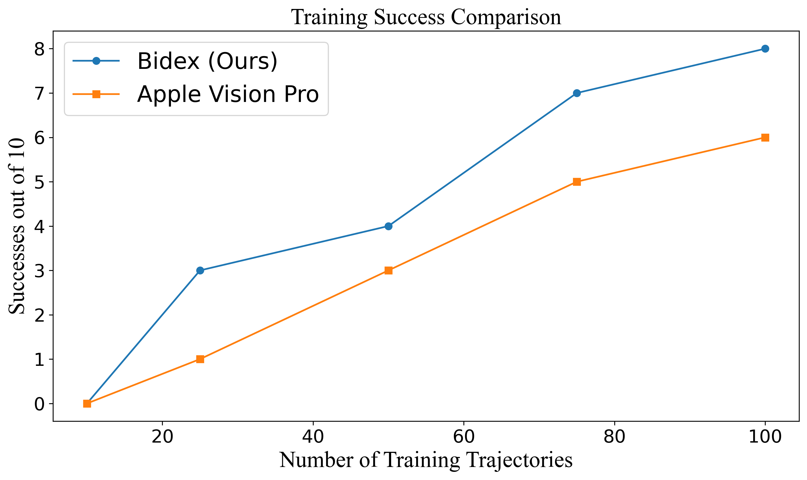
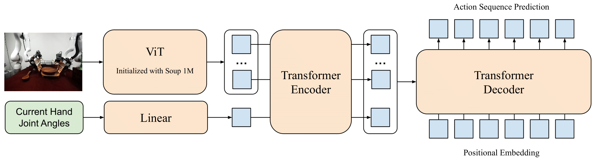

The teleoperation of Vision Pro exhibits some jitteriness in arm movement and reduced accuracy in finger control.
Vision Pro Autonomous Rollout
Ours Autonomous Rollout
Vision Pro produces more shaky actions on policy rollout due to the less accurate nature of vision-based teleoperation data and the use of end-effector control instead of joint control for the arm.

Policy Performance with varying number of demonstrations collected with Bidex and the Apple Vision Pro. We find that ours requires less data which can be collected at a faster rate to reach the same level of behavior cloning policy performance.
Imitation Learning

We train ACT from ALOHA using data collected by Bidex and find that our system can perform well even in this 44 dimension action space. This demonstrates that our robot data is high quality for training robot policies.